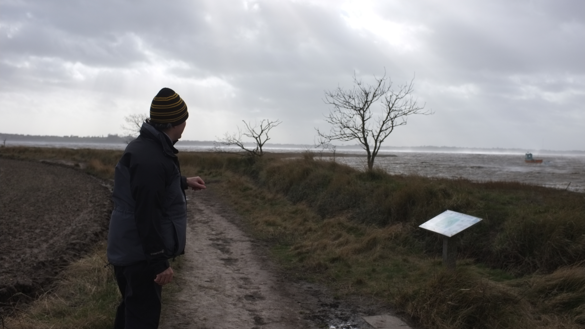

Desperate
I didn't take any form of art in college, which permantely stopped me from using the dark room. I spoke to a member of staff who wanted to see my work, but this was pretty early on for me in terms of picking up a camera. For the next week i filled a 8GB memory card with mostly useless photos trying to scrape together something worth showing. In the end i wasnt allowed in due to staff member needing to be present. But it did bring together a very desperate performance of taking photos of everything. These were the results